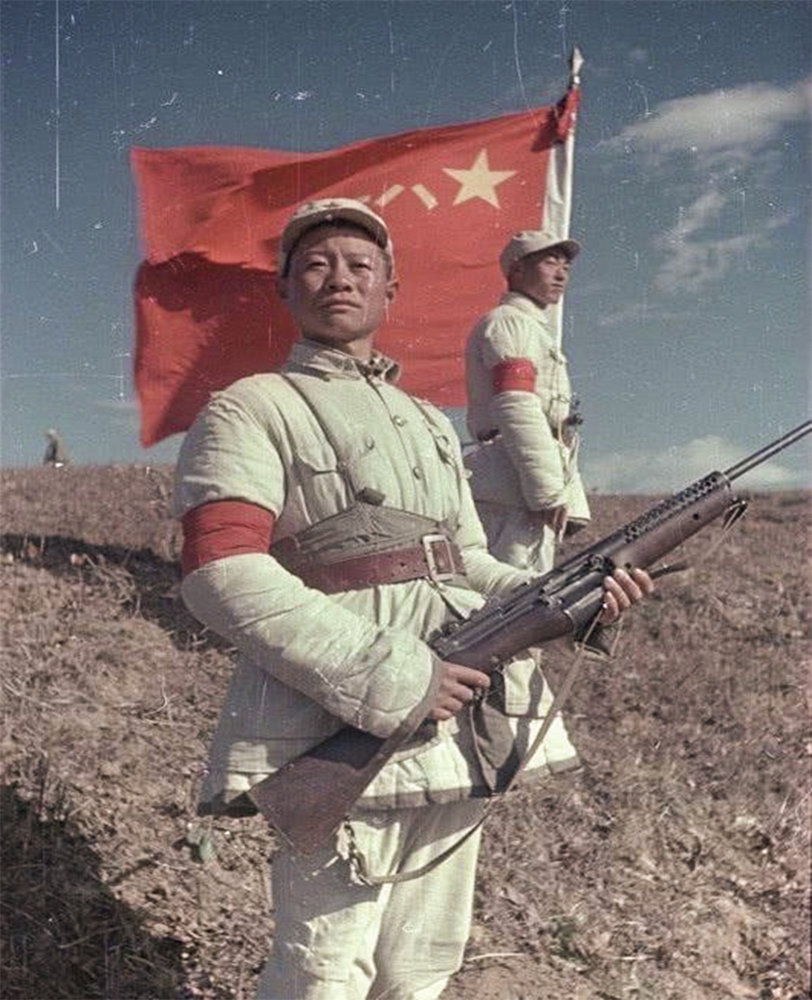

国之强大,民之大福


迅速发展起来，建立了海军、空军等军种和陆军的炮兵、通信兵 、工程兵、铁道兵等技术兵种部队，并都形成了作战能力。
中国人民志愿军空军在抗美援朝战争中，沿着"从实战中锻炼， 在战斗中成长"的道路，由不会打空战到学会打空战，由能打小规模的空战到能打大规模的空战， 由于志愿军空军在总体上处于劣势，因而也付出了很高的代价。

中国人民志愿军序列内以火力遂行作战任务的兵种。 炮兵，按其战斗使命分为地面炮兵和高射炮兵。 志愿军炮兵，通常指地面炮兵。它是抗美援朝战争中志愿军对地面目标实施火力突击的骨干力量。